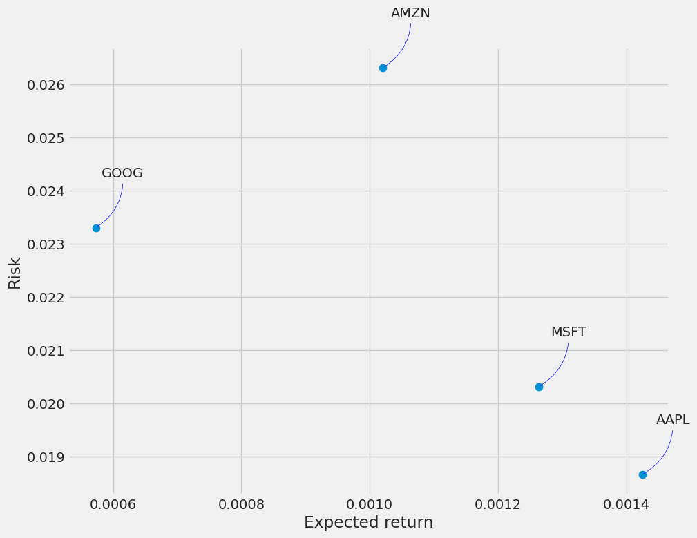

Data points indexed by time are called time series data. Time series data is everywhere, so manipulating them is important for any data analyst or data scientist. This notebook explores data from the stock market, particularly Apple, Amazon, Google, and Microsoft. By using Seaborn and Matplotlib, we will learn how to get stock information using yfinance. Based on a stock's past performance history, we will examine a few ways to evaluate its risk. Using the Long Short Term Memory (LSTM) method, we will also be predicting future stock prices! Our goal is to answer the following questions along the way: 1.) Over time, how did the stock's price change? 2.) On average, what was the stock's daily return? 3.) What was the moving average of the various stocks? 4.) How was the correlation between different stocks? 5.) How much value will we be putting at risk by investing in a particular stock? 6.) How can we attempt to The first step is to get the data and load it into memory in order to predict future stock behavior. Yahoo Finance will provide us with stock data. You can find compelling investments using Yahoo Finance's financial market data and tools. We will download market data from Yahoo Finance using the yfinance library, which offers a threaded and Pythonic way to do so.
What was the change in price of the stock overtime? We'll look at how to request stock information with Pandas and how to analyze basic stock attributes.
!pip install -q yfinanceWARNING: Running pip as the 'root' user can result in broken permissions and conflicting behaviour with the system package manager. It is recommended to use a virtual environment instead: https://pip.pypa.io/warnings/venv
Using the pip package manager, you can install the "yfinance" package.
In plain English, the code requests the installation of a software library called "yfinance." This library is likely used to retrieve and access financial data. By using the "-q" flag, the installation process will be quiet, displaying no unnecessary information or prompts. "Pip" is a Python package manager that simplifies the process of installing and managing software packages. Using this code, you can use the "yfinance" library silently in your Python programs.
import pandas as pd
import numpy as np
import matplotlib.pyplot as plt
import seaborn as sns
sns.set_style('whitegrid')
plt.style.use("fivethirtyeight")
%matplotlib inline
# For reading stock data from yahoo
from pandas_datareader.data import DataReader
import yfinance as yf
from pandas_datareader import data as pdr
yf.pdr_override()
# For time stamps
from datetime import datetime
# The tech stocks we'll use for this analysis
tech_list = ['AAPL', 'GOOG', 'MSFT', 'AMZN']
# Set up End and Start times for data grab
tech_list = ['AAPL', 'GOOG', 'MSFT', 'AMZN']
end = datetime.now()
start = datetime(end.year - 1, end.month, end.day)
for stock in tech_list:
globals()[stock] = yf.download(stock, start, end)
company_list = [AAPL, GOOG, MSFT, AMZN]
company_name = ["APPLE", "GOOGLE", "MICROSOFT", "AMAZON"]
for company, com_name in zip(company_list, company_name):
company["company_name"] = com_name
df = pd.concat(company_list, axis=0)
df.tail(10)[*********************100%***********************] 1 of 1 completed
[*********************100%***********************] 1 of 1 completed
[*********************100%***********************] 1 of 1 completed
[*********************100%***********************] 1 of 1 completed
| Open | High | Low | Close | Adj Close | Volume | company_name | |
|---|---|---|---|---|---|---|---|
| Date | |||||||
| 2023-06-14 | 126.699997 | 126.949997 | 124.120003 | 126.419998 | 126.419998 | 52422500 | AMAZON |
| 2023-06-15 | 125.209999 | 127.690002 | 124.320000 | 127.110001 | 127.110001 | 60458500 | AMAZON |
| 2023-06-16 | 127.709999 | 127.900002 | 125.300003 | 125.489998 | 125.489998 | 84188100 | AMAZON |
| 2023-06-20 | 124.970001 | 127.250000 | 124.500000 | 125.779999 | 125.779999 | 56930100 | AMAZON |
| 2023-06-21 | 125.639999 | 126.730003 | 123.849998 | 124.830002 | 124.830002 | 52137700 | AMAZON |
| 2023-06-22 | 125.309998 | 130.330002 | 125.139999 | 130.149994 | 130.149994 | 90354600 | AMAZON |
| 2023-06-23 | 129.110001 | 130.839996 | 128.279999 | 129.330002 | 129.330002 | 71855200 | AMAZON |
| 2023-06-26 | 129.330002 | 131.490005 | 127.099998 | 127.330002 | 127.330002 | 59989300 | AMAZON |
| 2023-06-27 | 128.630005 | 130.089996 | 127.550003 | 129.179993 | 129.179993 | 46801000 | AMAZON |
| 2023-06-28 | 128.940002 | 131.479996 | 128.440002 | 129.039993 | 129.039993 | 51695900 | AMAZON |
Several Python libraries are imported, including pandas, numpy, matplotlib, and seaborn, that are commonly used for data analysis and visualization. This code configures the style and appearance of the matplotlib and seaborn plots. These libraries provide functionalities to handle data, perform numerical computations, and create visualizations. It is possible to create a specific aesthetic by setting the plotting style to "whitegrid" and using the "fivethirtyeight" style. The code imports the pandas_datareader library, which allows data to be retrieved from various online sources for analysis. In addition, it imports the yfinance library, which provides direct access to Yahoo Finance's data. By calling yf.pdr_override(), it sets up the environment to use yfinance as the data source. Next, a list called tech_list is defined, which contains Apple, Google, Microsoft, and Amazon ticker symbols. This code specifies the start and end dates for retrieving the stock data for these companies. The end date is the current date, and the start date is one year prior. This ensures that the data covers a one-year period. The code retrieves historical stock data from Yahoo Finance for each company in the tech_list. The data is then assigned to separate variables named after each company's ticker symbol (e.g., AAPL, GOOG, MSFT, AMZN) using the yf.download() function with the respective stock symbol, start date, and end date. A second loop iterates over both company_list and company_name in order to assign the appropriate company name to each dataset. It adds a new column called "company_name" to each DataFrame in company_list and assigns the corresponding company name. Using the pd.concat() function, it concatenates all the individual dataframes in company_list along the vertical axis (axis=0). This results in a single dataframe named df that combines the stock data for all the tech companies. The code displays the most recent 10 rows of the df dataframe, which shows the most recent stock data. For example, visualizations, calculations, or modeling can be made with this information.
In summary, the provided code sets up the necessary environment, retrieves historical stock data from Yahoo Finance for specified tech companies, assigns company names to the data, and combines it into a single dataframe for further analysis. Data exploration and interpretation can be conducted after viewing the most recent stock data for the selected companies.
Upon reviewing our data, we find that it is numeric and that the date is the index. Notice also that weekends are missing from the records. One quick note: Using globals() to set frame names is sloppy. Now that we have our data, let's do some basic data analysis and check it.
Descriptive Statistics about the Data are generated by .describe(). Descriptive statistics include those that summarize the central tendency, dispersion, and shape of a dataset’s distribution, excluding NaN values. It is applicable to numeric and object series, as well as mixed DataFrame column sets. Depending on what is provided, the output will vary. For more information, please refer to the notes below.
# Summary Stats
AAPL.describe()| Open | High | Low | Close | Adj Close | Volume | |
|---|---|---|---|---|---|---|
| count | 251.000000 | 251.000000 | 251.000000 | 251.000000 | 251.000000 | 2.510000e+02 |
| mean | 154.640080 | 156.528367 | 153.073347 | 154.949442 | 154.514557 | 7.234102e+07 |
| std | 14.362077 | 14.153116 | 14.666343 | 14.441561 | 14.548844 | 2.236067e+07 |
| min | 126.010002 | 127.769997 | 124.169998 | 125.019997 | 124.656982 | 3.519590e+07 |
| 25% | 144.299995 | 146.680000 | 142.649994 | 144.949997 | 144.254913 | 5.596360e+07 |
| 50% | 152.350006 | 154.330002 | 150.779999 | 152.740005 | 152.131577 | 6.874980e+07 |
| 75% | 165.070000 | 166.519997 | 164.114998 | 165.455002 | 165.051704 | 8.161725e+07 |
| max | 187.929993 | 189.899994 | 187.600006 | 189.250000 | 189.250000 | 1.647624e+08 |
The provided code calculates summary statistics for the stock data of the company represented by the ticker symbol "AAPL," which is Apple Inc.
To explain it in plain English, the code uses the
describe() function on the AAPL variable,
which contains the historical stock data for Apple Inc. The
describe() function calculates various summary statistics
for the data, including count, mean, standard deviation, minimum value,
quartiles, and maximum value.
By calling describe() on the AAPL dataset,
the code provides an overview of the statistical characteristics of the
stock data. This summary includes information such as the total number
of data points available, the average value of the stock, the spread of
the data around the mean, and the range of values observed.
By using this code, Apple Inc. stock data is analyzed statistically, providing insight into its distribution and key numerical values.
Weekends are not included in the data, so we only have 255 records in a year.
Information About the Data The .info() method prints information about a DataFrame, including the index, columns, non-null values, and memory usage.
# General info
AAPL.info()<class 'pandas.core.frame.DataFrame'>
DatetimeIndex: 251 entries, 2022-06-29 to 2023-06-28
Data columns (total 7 columns):
# Column Non-Null Count Dtype
--- ------ -------------- -----
0 Open 251 non-null float64
1 High 251 non-null float64
2 Low 251 non-null float64
3 Close 251 non-null float64
4 Adj Close 251 non-null float64
5 Volume 251 non-null int64
6 company_name 251 non-null object
dtypes: float64(5), int64(1), object(1)
memory usage: 15.7+ KB
The provided code retrieves general information about the stock
represented by the ticker symbol "AAPL," which corresponds to Apple Inc.
Specifically, it calls the "info()" function on the AAPL variable. The
info() function provides an overview of the available
information about the stock. It displays details such as the data type
of the stock data, the number of non-null values, and the memory usage.
Additionally, it may provide information on the source of the data, any
specific attributes or metadata associated with the stock, and other
relevant details. It is useful for understanding the stock's structure
and properties. The report provides insights into the quality and
limitations of the available information. It can also help identify
missing or incomplete data, which is important for performing accurate
analysis or making informed decisions based on the stock data.
Overall, by executing info() on the AAPL
dataset, this code provides a concise summary of the general information
and characteristics of the stock data for Apple Inc.
Closing Price is the last price at which the stock trades during a regular trading day. In order to track a stock's performance over time, investors use its closing price as a benchmark.
# Let's see a historical view of the closing price
plt.figure(figsize=(15, 10))
plt.subplots_adjust(top=1.25, bottom=1.2)
for i, company in enumerate(company_list, 1):
plt.subplot(2, 2, i)
company['Adj Close'].plot()
plt.ylabel('Adj Close')
plt.xlabel(None)
plt.title(f"Closing Price of {tech_list[i - 1]}")
plt.tight_layout()Matplotlib is used to visualize the closing prices of a set of tech companies. To explain it in plain English, the code starts by setting up the figure size and adjusting the subplots' layout to ensure they are properly positioned and spaced. It iterates over the company_list, containing stock data for the selected tech companies, in a loop. For each company, it creates a subplot within the larger figure. Each subplot plots the adjusted close prices (Adj Close) of the company's stock over time. The adjusted close price accounts for factors such as dividends, stock splits, or other corporate actions that may affect the stock price. In addition, the y-axis label is set to "Adj Close" to identify the type of data being plotted. It removes the x-axis label by setting it to None to avoid clutter. In addition, it sets the title of the subplot to indicate the closing price of the corresponding tech company. The title contains the ticker symbol of the company, which is retrieved from the tech_list. Finally, plt.tight_layout() is called to adjust the spacing between subplots and improve overall readability. It creates a figure with subplots displaying historical closing prices of a tech company. This tool provides insights into the relative performance of the selected tech companies by comparing stock price trends over time.
Volume of Sales refers to the amount of assets or securities that change hands over time, usually per day. A stock trading volume, for example, is the number of shares traded between its open and close each day. Technical traders use trading volume and changes in volume over time as inputs.
# Now let's plot the total volume of stock being traded each day
plt.figure(figsize=(15, 10))
plt.subplots_adjust(top=1.25, bottom=1.2)
for i, company in enumerate(company_list, 1):
plt.subplot(2, 2, i)
company['Volume'].plot()
plt.ylabel('Volume')
plt.xlabel(None)
plt.title(f"Sales Volume for {tech_list[i - 1]}")
plt.tight_layout()In the provided code, a graph of the volume of stock traded each day
by a set of tech companies is generated using matplotlib. In plain
English, the code starts by adjusting the figure size and the layout of
the subplots to make sure they're positioned and spaced correctly.
Following that, the program iterates over the stock data of the selected
tech companies in a loop. For each company, it creates a subplot within
the larger figure. The code plots the volume of stock traded over time
as part of each subplot. The volume represents the total number of
shares or units of the company's stock that were traded on a given day.
To display volume data, the code sets the y-axis label to "Volume." It
removes the x-axis label by setting it to None to avoid
clutter. The code also sets the subplot's title to indicate the sales
volume of the corresponding tech company. The title includes the ticker
symbol of the company, which is retrieved from the
tech_list.
Finally, the plt.tight_layout() function is used to
adjust the spacing between subplots and improve the overall readability
of the chart. This code creates a figure with subplots that display the
total number of shares traded each day for a technology company. This
tool provides a visual representation of the trading activity and
liquidity of stocks of selected tech companies over time. A plot
provides insights into periods of high or low trading volume, which can
be useful for assessing market trends.
Let's calculate the stock's moving average now that we've seen the closing price and volume traded each day.
What was the moving average of the various stocks? A moving average smooths out price data by creating a constantly updated average. An average is calculated over a specific time period, such as 10 days, 20 minutes, 30 weeks, or any other period selected by the trader.
ma_day = [10, 20, 50]
for ma in ma_day:
for company in company_list:
column_name = f"MA for {ma} days"
company[column_name] = company['Adj Close'].rolling(ma).mean()
fig, axes = plt.subplots(nrows=2, ncols=2)
fig.set_figheight(10)
fig.set_figwidth(15)
AAPL[['Adj Close', 'MA for 10 days', 'MA for 20 days', 'MA for 50 days']].plot(ax=axes[0,0])
axes[0,0].set_title('APPLE')
GOOG[['Adj Close', 'MA for 10 days', 'MA for 20 days', 'MA for 50 days']].plot(ax=axes[0,1])
axes[0,1].set_title('GOOGLE')
MSFT[['Adj Close', 'MA for 10 days', 'MA for 20 days', 'MA for 50 days']].plot(ax=axes[1,0])
axes[1,0].set_title('MICROSOFT')
AMZN[['Adj Close', 'MA for 10 days', 'MA for 20 days', 'MA for 50 days']].plot(ax=axes[1,1])
axes[1,1].set_title('AMAZON')
fig.tight_layout()The provided code calculates and plots moving averages (MA) for different time periods of the adjusted closing prices for a set of tech companies.
To explain it in plain English, the code begins by defining a list
called ma_day which contains the time periods (in days) for
the moving averages to be calculated.
Next, it enters a nested loop structure. Outer loop iterates over
each time period specified in ma_day. The inner loop iterates over each
company in the company_list. For each company, the code
determines the moving average of the adjusted closing prices (Adj Close)
for the specified time period. It creates a new column with a name that
indicates the moving average period and assigns the calculated values to
that column in the respective company's dataset. Subplots are then
created using the subplots() function. It sets the height
and width of the figure accordingly. Subplots are then plotted for each
company's adjusted closing prices and calculated moving averages. Each
subplot represents one company and displays the adjusted closing prices
as well as the moving averages for different time periods. The code sets
the title of each subplot to indicate the corresponding company's name,
such as 'APPLE', 'GOOGLE', 'MICROSOFT', and 'AMAZON'. Finally, the
fig.tight_layout() function is called to adjust the spacing
between subplots and enhance the overall layout. In summary, this code
calculates and visualizes the moving averages for different time periods
of A set of tech companies' adjusted closing prices. In addition to
providing insight into the trends and patterns in stock prices over
time, moving averages can also be used to further analyze and interpret
the data. Using the plots, you can identify potential trends or trading
signals by comparing the stock prices with their corresponding moving
averages.
As we can see from the graph, the best values to measure the moving average are 10 and 20 days, since we are still able to detect trends in the data without being affected by noise.
On average, how much did the stock return each day?
Let's dive a little deeper now that we've done some baseline analysis. Now let's analyze the stock's risk. To do so, we must take into account the stock's daily changes, not just its absolute value. We'll use Pandas to retrieve Apple's daily returns.
# We'll use pct_change to find the percent change for each day
for company in company_list:
company['Daily Return'] = company['Adj Close'].pct_change()
# Then we'll plot the daily return percentage
fig, axes = plt.subplots(nrows=2, ncols=2)
fig.set_figheight(10)
fig.set_figwidth(15)
AAPL['Daily Return'].plot(ax=axes[0,0], legend=True, linestyle='--', marker='o')
axes[0,0].set_title('APPLE')
GOOG['Daily Return'].plot(ax=axes[0,1], legend=True, linestyle='--', marker='o')
axes[0,1].set_title('GOOGLE')
MSFT['Daily Return'].plot(ax=axes[1,0], legend=True, linestyle='--', marker='o')
axes[1,0].set_title('MICROSOFT')
AMZN['Daily Return'].plot(ax=axes[1,1], legend=True, linestyle='--', marker='o')
axes[1,1].set_title('AMAZON')
fig.tight_layout()The provided code calculates and plots the daily percentage returns
for the adjusted closing prices of a set of tech companies. Using a
loop, it iterates over each company in the company_list. Within the
loop, it calculates the daily percentage change
(Daily Return) for the adjusted closing prices
(Adj Close) of each company. The percentage change
represents the rate of change from one day to the next, indicating the
daily return on investment. The code creates a graph with subplots using
the subplots() function. It sets the height and width of the figure
accordingly. Subplots show the daily return percentages for each
company. On the y-axis, each subplot represents one company and displays
its daily return values. The x-axis represents the time period. Each
subplot is titled according to the name of the company, such as 'APPLE',
'GOOGLE', 'MICROSOFT', and 'AMAZON'. Data points are visually
represented by plot markers and linestyles. To make sure the plot
elements are understood, the legend is included, as well as a function
to adjust the spacing between the subplots and enhance the overall
layout. To summarize, this code calculates and visualizes the daily
percentage returns for a set of tech companies based on their adjusted
closing prices. Daily returns provide insight into the stock's
performance and volatility on a day-to-day basis. Comparing the daily
returns of different companies enables the identification of patterns or
trends in their stock performance.
Now let's look at a histogram of the average daily return. On the same figure, we will create both a histogram and kde plot using seaborn.
plt.figure(figsize=(12, 9))
for i, company in enumerate(company_list, 1):
plt.subplot(2, 2, i)
company['Daily Return'].hist(bins=50)
plt.xlabel('Daily Return')
plt.ylabel('Counts')
plt.title(f'{company_name[i - 1]}')
plt.tight_layout()The provided code generates a set of histograms to visualize the distribution of daily percentage returns for a set of tech companies.
To explain it in plain English, the code starts by setting up the
figure size using plt.figure(figsize=(12, 9)), which
determines the dimensions of the overall figure.
Next, it enters a loop that iterates over the
company_list, which contains the stock data for the
selected tech companies. For each company, it creates a subplot within
the larger figure. For each subplot, it plots a histogram using the
hist() function. Histograms display the frequency or count
of occurrences of different daily return values for each company. The
number of bins for the histogram is set to 50, meaning the range of
daily return values is divided into 50 intervals or groups. The x-axis
is labeled "Daily Return" to indicate the type of data. It sets the
y-axis label as "Counts" to represent the frequency of occurrence.
Additionally, the code sets the subplot's title to indicate the
corresponding company's name, which is retrieved from the
company_name list.
Finally, the plt.tight_layout() function is called to
adjust the spacing between subplots and improve the overall layout.
In summary, this code generates histograms to visualize the distribution of daily percentage returns for a set of tech companies. In addition to providing insight into the frequency and concentration of different return values, histograms allow us to better understand the stock's risk and variability. By using the plot layout, different companies' return distributions can be compared and their performance and risk profiles can be analyzed.
How did the closing prices of different stocks correlate?
Correlation measures the degree to which two variables move in relation to each other and must fall between -1.0 and +1.0. However, correlation does not tell us if x causes y or vice versa, or if the association is due to a third factor. We want to analyze the returns of all the stocks on our list. For each stock dataframe, let's build a DataFrame that contains all the ['Close'] columns.
# Grab all the closing prices for the tech stock list into one DataFrame
closing_df = pdr.get_data_yahoo(tech_list, start=start, end=end)['Adj Close']
# Make a new tech returns DataFrame
tech_rets = closing_df.pct_change()
tech_rets.head()[*********************100%***********************] 4 of 4 completed
| AAPL | AMZN | GOOG | MSFT | |
|---|---|---|---|---|
| Date | ||||
| 2022-06-29 | NaN | NaN | NaN | NaN |
| 2022-06-30 | -0.018028 | -0.024881 | -0.025691 | -0.013179 |
| 2022-07-01 | 0.016164 | 0.031541 | -0.002665 | 0.010707 |
| 2022-07-05 | 0.018930 | 0.035962 | 0.044059 | 0.012597 |
| 2022-07-06 | 0.009607 | 0.007313 | 0.011648 | 0.012783 |
The provided code retrieves the adjusted closing prices for a list of tech stocks and calculates the daily percentage returns for each stock.
To explain it in plain English, the code begins by using the
pdr.get_data_yahoo() function to fetch the adjusted closing
prices of the tech stocks listed in tech_list. The data is
retrieved from Yahoo Finance and covers the specified start and end
dates. In the closing_df DataFrame, each column represents a different
tech stock, and each row represents a specific date. The DataFrame
provides a consolidated view of the adjusted closing prices for all the
tech stocks in the list. After that, the code calculates the daily
percentage returns using the pct_change() function on the
closing_df DataFrame. The function computes the percentage
change from one row to the next, representing the daily return on
investment for each stock. The resulting DataFrame, named tech_rets,
contains the daily percentage returns for each tech stock. The structure
is similar to closing_df, with each column representing a
different tech stock, and each row representing a specific date.
Finally, the code displays the first few rows of the
tech_rets DataFrame, providing an initial view of the
calculated daily percentage returns for the tech stocks.
In summary, this code retrieves the adjusted closing prices for a list of tech stocks and calculates the daily percentage returns for each stock. Based on their daily returns, the resulting DataFrame can be used for further analysis and comparison of tech stocks' performance and volatility.
We can now check how correlated two stocks are by comparing their daily percentage returns. Let's see how a sotck compares to itself.
# Comparing Google to itself should show a perfectly linear relationship
sns.jointplot(x='GOOG', y='GOOG', data=tech_rets, kind='scatter', color='seagreen')<seaborn.axisgrid.JointGrid at 0x7b6940ee1120>The provided code generates a joint plot to visualize the relationship between the daily percentage returns of Google's stock against itself. The code uses the seaborn library. A joint plot combines a scatter plot and histograms to display the relationship between two variables. Here, 'GOOG', representing Google's stock, is used as the x and y parameters for the joint plot. This means that both the x-axis and y-axis of the joint plot will represent the daily percentage returns of Google's stock. The 'kind' parameter indicates if the plot should include scatter data. The scatter plot will display the individual data points where the x-coordinate represents the daily returns of Google's stock, and the y-coordinate also represents the daily returns of Google's stock.
This code generates a joint plot to visualize the relationship between Google's daily percentage returns against itself by setting the color parameter to 'seagreen'. Due to the fact that it compares Google's returns to itself, a perfectly linear relationship is expected, as it serves as a reference for evaluating correlations and patterns.
# We'll use joinplot to compare the daily returns of Google and Microsoft
sns.jointplot(x='GOOG', y='MSFT', data=tech_rets, kind='scatter')<seaborn.axisgrid.JointGrid at 0x7b6940f072b0>The provided code generates a joint plot to compare the daily
percentage returns of Google's stock and Microsoft's stock. To explain
it in plain English, the code uses the seaborn library to create a joint
plot, which combines a scatter plot and histograms to visualize the
relationship between two variables. In this case, the
jointplot() function is called with the x
parameter set to 'GOOG', representing the daily percentage returns of
Google's stock, and the y parameter set to 'MSFT',
Microsoft's stock returns are represented as a percentage on a daily
basis. This means that the x-axis of the joint plot represents the daily
returns of Google's stock, and the y-axis represents the daily returns
of Microsoft's stock.
The data parameter is set to tech_rets,
which is the DataFrame containing the calculated daily returns for the
tech stocks.
The kind parameter is set to 'scatter', indicating that
the joint plot should include a scatter plot. The scatter plot will show
individual data points where the x-coordinate represents the daily
returns of Google's stock, and the y-coordinate represents the daily
returns of Microsoft's stock. By combining this code, a visual
comparison can be made between Google's and Microsoft's daily percentage
returns. It provides insight into their performance and potential
interaction by assessing the relationship and potential correlation
between the two stocks' returns.
Therefore, if two stocks are perfectly (and positively) correlated, a linear relationship should exist between their daily return values.
In our technology stock ticker list, Seaborn and Pandas make it very easy to repeat this comparison analysis. This plot can be automatically created using sns.pairplot()
# We can simply call pairplot on our DataFrame for an automatic visual analysis
# of all the comparisons
sns.pairplot(tech_rets, kind='reg')<seaborn.axisgrid.PairGrid at 0x7b694008e320>A pair plot is generated with the provided code to automatically analyze and compare daily percentage returns from different tech stocks. The code generates a pair plot using the seaborn library, which creates a grid of scatter plots and histograms to visualize relationships between several variables by using the seaborn library.
In this case, the pairplot() function is called with the
tech_rets DataFrame as the data source. The DataFrame
contains the daily percentage returns for multiple tech stocks. The
'kind' parameter indicates that regression lines should be included in
the scatter plot. Regression lines help visualize the overall trend or
relationship between the variables being compared. Pairplot()
automatically generates scatter plots and histograms using the tech_rets
DataFrame. The scatter plots compare the daily returns of two different
tech stocks, while the histograms show their distribution.
The pair plot allows for a comprehensive visual analysis of the relationships and comparisons between the daily percentage returns of the tech stocks. Identifying correlations, patterns, and outliers allows further insight into the performance and interplay of tech stocks.
All the daily returns between all the stocks can be seen above. There is an interesting correlation between Google and Amazon daily returns based on a quick glance. This individual comparison might be interesting to investigate.
While sns.pairplot() is fantastic, we can also manipulate the figure with sns.PairGrid(), including what kinds of plots appear in the diagonal, upper triangle, and lower triangle. The following example illustrates how seaborn can be used to achieve this goal.
# Set up our figure by naming it returns_fig, call PairPLot on the DataFrame
return_fig = sns.PairGrid(tech_rets.dropna())
# Using map_upper we can specify what the upper triangle will look like.
return_fig.map_upper(plt.scatter, color='purple')
# We can also define the lower triangle in the figure, inclufing the plot type (kde)
# or the color map (BluePurple)
return_fig.map_lower(sns.kdeplot, cmap='cool_d')
# Finally we'll define the diagonal as a series of histogram plots of the daily return
return_fig.map_diag(plt.hist, bins=30)<seaborn.axisgrid.PairGrid at 0x7b69410b5c60>The provided code sets up a figure and configures the layout of subplots for visualizing the relationships and distributions of the daily percentage returns of tech stocks.
By using the seaborn library, the code creates a PairGrid figure named return_fig. A PairGrid is a grid of subplots that allows for detailed visualization and customization of pairwise relationships between variables. It uses the tech_rets DataFrame. It contains the daily percentage returns of the tech stocks. PairGrid's upper triangle is defined by map_upper(). We choose the scatter plot as the plot type, and we set the color to purple. This means that the upper triangle of the PairGrid will display scatter plots representing the relationships between the daily returns of different tech stocks. The lower triangle of the PairGrid is defined using the map_lower() function. The plot type is kernel density estimation (kde), and the color map is cool_d. This means that the lower triangle of the PairGrid will display kde plots representing the distributions of the daily returns for different tech stocks. To define the diagonal of the PairGrid, the map_diag() function is called. Hexagon plots are chosen as the plot type, and 30 bins are selected as the number of bins. As a result, the diagonal of the PairGrid displays histograms that represent the daily return distribution for each tech stock individually. To visualize the relationships and distributions of the daily percentage returns of tech stocks, this code creates a customized figure with a PairGrid layout. In addition to highlighting patterns, correlations, and distributions in the data, it allows for a comprehensive analysis of pairwise relationships.
# Set up our figure by naming it returns_fig, call PairPLot on the DataFrame
returns_fig = sns.PairGrid(closing_df)
# Using map_upper we can specify what the upper triangle will look like.
returns_fig.map_upper(plt.scatter,color='purple')
# We can also define the lower triangle in the figure, inclufing the plot type (kde) or the color map (BluePurple)
returns_fig.map_lower(sns.kdeplot,cmap='cool_d')
# Finally we'll define the diagonal as a series of histogram plots of the daily return
returns_fig.map_diag(plt.hist,bins=30)<seaborn.axisgrid.PairGrid at 0x7b69357328f0>The provided code sets up a figure and configures the layout of subplots for visualizing the relationships and distributions of the closing prices of tech stocks. In plain English, it creates a PairGrid figure named returns_fig. A PairGrid is a grid of subplots that allows for detailed visualization and customization of pairwise relationships between variables.
The closing_df DataFrame, which contains the closing
prices of the tech stocks, is used as the data source for the
PairGrid.
The map_upper() function is called to define the
appearance of the upper triangle of the PairGrid. The plot type is
scatter plot, and the color is purple. This means that the upper
triangle of the PairGrid will display scatter plots representing the
relationships between the closing prices of different tech stocks. A
map_lower() function can be called to define the look of the lower
triangle. The plot type is kernel density estimation (kde), and the
color map is cool_d. This means that the lower triangle of the PairGrid
will display kde plots representing the distributions of the closing
prices for different tech stocks. The diagonal of the PairGrid is
defined using the map_diag() function. The plot type is histogram, and
the number of bins is 30. This means that the diagonal of the PairGrid
will display histograms representing the distribution of the closing
prices for each individual tech stock. To visualize the relationship and
distribution of closing prices of tech stocks, this code creates a
customized figure with a PairGrid layout. Using this method, you can
analyze pairwise relationships in depth, highlighting patterns,
correlations, and distributions.
Also, we could plot the correlation between the stocks' daily return values using a correlation plot. A comparison of Microsoft and Apple's closing prices reveals an interesting relationship.
plt.figure(figsize=(12, 10))
plt.subplot(2, 2, 1)
sns.heatmap(tech_rets.corr(), annot=True, cmap='summer')
plt.title('Correlation of stock return')
plt.subplot(2, 2, 2)
sns.heatmap(closing_df.corr(), annot=True, cmap='summer')
plt.title('Correlation of stock closing price')Text(0.5, 1.0, 'Correlation of stock closing price')The provided code generates two heatmaps to visualize the correlation between the daily percentage returns of tech stocks and the correlation between the closing prices of tech stocks.
To explain it in plain English, the code begins by setting up the
figure size using plt.figure(figsize=(12, 10)), which
determines the dimensions of the overall figure.
Next, it creates a subplot layout with two rows and two columns using
plt.subplot(2, 2, 1) and plt.subplot(2, 2, 2).
This layout allows for two heatmaps to be displayed side by side. The
code generates the first heatmap using the sns.heatmap()
function on the tech_rets.corr() DataFrame. The heatmap
represents the correlation matrix of tech stock returns on a daily
basis. Colors represent correlation values, with higher values
indicating stronger positive or negative correlations. Heatmaps with
annot=True are annotated numerically with correlation values. This
parameter sets the color scheme to a summer-themed palette. The subplot
is given the title 'Correlation of stock return'. A second heatmap is
generated in the second subplot (top-right), using the
closing_df.corr() DataFrame. The heatmap represents the
correlation matrix of the closing prices of tech stocks. Colors indicate
correlation values, with higher values indicating stronger positive or
negative correlations. The annot=True parameter adds
numerical annotations to the heatmap, indicating correlations.
Cmap='summer' sets a summer-themed color scheme. The subplot is given
the title 'Correlation of stock closing price'. The code provides two
heatmaps that illustrate the correlation between the daily percentage
returns and the closing prices of the tech stocks. The heatmaps help
identify potential relationships and dependencies among stocks, allowing
insight into their performance and potential diversification.
Microsoft and Amazon had the strongest correlation of daily stock returns numerically and visually, just as we suspected from our PairPlot. Interestingly, all the technology companies are positively correlated.
By investing in a particular stock, how much value are we putting at risk?
The most basic way to quantify risk is to compare the expected return with the standard deviation of the daily percentage returns based on the information we've gathered.
rets = tech_rets.dropna()
area = np.pi * 20
plt.figure(figsize=(10, 8))
plt.scatter(rets.mean(), rets.std(), s=area)
plt.xlabel('Expected return')
plt.ylabel('Risk')
for label, x, y in zip(rets.columns, rets.mean(), rets.std()):
plt.annotate(label, xy=(x, y), xytext=(50, 50), textcoords='offset points', ha='right', va='bottom',
arrowprops=dict(arrowstyle='-', color='blue', connectionstyle='arc3,rad=-0.3'))
The provided code generates a scatter plot to visualize the relationship between the expected returns and the risk of tech stocks.
To explain it in plain English, the code starts by dropping any rows
with missing values (NaN) from the tech_rets DataFrame and
assigns the resulting DataFrame to a new variable called
rets.
Next, it defines the size of the markers in the scatter plot by
calculating the area using the formula np.pi * 20. This
determines the size of the markers representing the tech stocks on the
plot.
The code sets up the figure size using
plt.figure(figsize=(10, 8)), which determines the
dimensions of the overall figure.
Then, it generates the scatter plot by calling
plt.scatter() with the rets.mean() (expected
return) on the x-axis and rets.std() (risk) on the y-axis.
The size of the markers is set using the s parameter.
The x-axis is labeled as 'Expected return', and the y-axis is labeled
as 'Risk' using the plt.xlabel() and
plt.ylabel() functions, respectively.
It annotates each point on the scatter plot with the appropriate tech stock label using a loop. Each stock's label, x-coordinate (mean return), and y-coordinate (standard deviation of return) are retrieved from the rets DataFrame. This function is used to add the label text, specify the position, and customize the appearance of the annotation to the plot. As a whole, this code generates a scatter plot illustrating the relationship between tech stocks' expected returns and their risks. Investment decisions are based on the trade-off between expected returns and risk tolerance and allow the identification of stocks with different risk-return profiles. The annotations provide additional information by labeling each point with the corresponding stock name, improving the readability of the plot.
APPLE INC. stock price prediction:
# Get the stock quote
df = pdr.get_data_yahoo('AAPL', start='2012-01-01', end=datetime.now())
# Show teh data
df[*********************100%***********************] 1 of 1 completed
| Open | High | Low | Close | Adj Close | Volume | |
|---|---|---|---|---|---|---|
| Date | ||||||
| 2012-01-03 | 14.621429 | 14.732143 | 14.607143 | 14.686786 | 12.482927 | 302220800 |
| 2012-01-04 | 14.642857 | 14.810000 | 14.617143 | 14.765714 | 12.550009 | 260022000 |
| 2012-01-05 | 14.819643 | 14.948214 | 14.738214 | 14.929643 | 12.689342 | 271269600 |
| 2012-01-06 | 14.991786 | 15.098214 | 14.972143 | 15.085714 | 12.821995 | 318292800 |
| 2012-01-09 | 15.196429 | 15.276786 | 15.048214 | 15.061786 | 12.801654 | 394024400 |
| ... | ... | ... | ... | ... | ... | ... |
| 2023-06-22 | 183.740005 | 187.050003 | 183.669998 | 187.000000 | 187.000000 | 51245300 |
| 2023-06-23 | 185.550003 | 187.559998 | 185.009995 | 186.679993 | 186.679993 | 53079300 |
| 2023-06-26 | 186.830002 | 188.050003 | 185.229996 | 185.270004 | 185.270004 | 48088700 |
| 2023-06-27 | 185.889999 | 188.389999 | 185.669998 | 188.059998 | 188.059998 | 50730800 |
| 2023-06-28 | 187.929993 | 189.899994 | 187.600006 | 189.250000 | 189.250000 | 51133200 |
2890 rows × 6 columns
This code retrieves Apple Inc. stock quote data. (AAPL) from Yahoo Finance for a specific time period.
To explain it in plain English, the code uses the
pdr.get_data_yahoo() function to fetch the stock quote data
for the ticker symbol 'AAPL'. The data is retrieved from Yahoo
Finance.
The start parameter is set to '2012-01-01', indicating
the starting date for which the stock quote data is requested.
The end parameter is set to datetime.now(),
representing the current date and time. This specifies the end date for
the retrieved data, ensuring that it includes the most recent available
information. Stock quote data is stored in a DataFrame named
df. A DataFrame contains various stock information, such as
the opening price, closing price, high and low prices, volume, and
adjusted closing price. Each row in the DataFrame represents a specific
date, and each column represents a different attribute of the stock.
By displaying the df DataFrame, the code provides an
overview of the historical prices and other relevant information for
Apple Inc.'s stock. The code retrieves and displays Apple Inc. stock
quote information. Further analysis and examination of the stock's
historical performance and characteristics is possible through Yahoo
Finance.
plt.figure(figsize=(16,6))
plt.title('Close Price History')
plt.plot(df['Close'])
plt.xlabel('Date', fontsize=18)
plt.ylabel('Close Price USD ($)', fontsize=18)
plt.show()The provided code generates a line plot to visualize the historical closing price of a stock.
To explain it in plain English, the code starts by setting up the
figure size using plt.figure(figsize=(16,6)), which
determines the dimensions of the overall figure.
Next, it sets the title of the plot as 'Close Price History' using
plt.title(), providing a descriptive title for the
plot.
Then, it plots the closing price data using
plt.plot(df['Close']). It has the historical closing prices
for each stock listed in the 'Close' column. It uses a line plot to
connect the closing price values over time, allowing for a visual
representation of the price movement. The x-axis is labeled 'Date' using
plt.xlabel(), indicating that the horizontal axis represents different
dates. The fontsize parameter is set to 18 to adjust the size of the
label for better readability. The plot y-axis is labeled as 'Close Price
USD ($)' with plt.ylabel(), indicating the stock's closing price in USD.
The fontsize parameter is set to 18 to adjust the size of the label for
better readability.
Finally, the plot is displayed using plt.show(), showing
the line plot of the historical closing prices.
Overall, this code generates a line plot that visualizes the historical closing price of a stock over time. It allows for observation of patterns, trends, and potential changes in a stock's value by providing a straightforward representation of its price trend.
# Create a new dataframe with only the 'Close column
data = df.filter(['Close'])
# Convert the dataframe to a numpy array
dataset = data.values
# Get the number of rows to train the model on
training_data_len = int(np.ceil( len(dataset) * .95 ))
training_data_len2746The provided code prepares the data for training a model by
determining the length of the training data. In plain English, the code
performs the following steps: 1. It creates a new DataFrame named
data that includes only the 'Close' column from the
df DataFrame. This column represents a stock's closing
price. The DataFrame is converted into an array using Numpy, and the
array is assigned to the dataset variable. As a result of this
conversion, the data can be more easily manipulated and analyzed. The
training data length is calculated by multiplying the total number of
rows in the dataset array by 0.95 (95%). The result is then
rounded up to the nearest whole number using np.ceil() to
improve the likelihood that the training data includes a significant
portion of the data. The calculated length of the training data is
stored in the variable training_data_len.
In this code, the 'Close' column is extracted from the dataset, converted into a numpy array, and the training data length is determined based on a specified percentage (95%) of the entire dataset. During the training process, the length of the training data determines the number of data points that will be used to build the model's predictive capability.
# Scale the data
from sklearn.preprocessing import MinMaxScaler
scaler = MinMaxScaler(feature_range=(0,1))
scaled_data = scaler.fit_transform(dataset)
scaled_dataarray([[0.0042172 ],
[0.00466744],
[0.00560256],
...,
[0.97729641],
[0.99321172],
[1. ]])The provided code performs data scaling on a given dataset using the Min-Max scaling technique. In plain English, the code uses the MinMaxScaler class from the Sklearn.preprocessing module. Scaling is a common preprocessing step that transforms the data to a specific range. First, an instance of the MinMaxScaler class is created and assigned to the variable scaler. As a result, the scaler object is called using the fit_transform() method, passing the dataset as the transform data for the feature_range parameter. This method fits the scaler on the data and simultaneously applies the scaling transformation. Scaled data is stored in the variable scaled_data. Throughout the array, each value is a scaled version of its corresponding value in the original dataset, ensuring that all values fall within a specified range. The code converts the data to a standard range by using Min-Max scaling on the given dataset. Various machine learning algorithms and techniques that assume normalized input can benefit from scaling the data. By bringing all values within a common scale, it helps maintain data integrity and comparability.
# Create the training data set
# Create the scaled training data set
train_data = scaled_data[0:int(training_data_len), :]
# Split the data into x_train and y_train data sets
x_train = []
y_train = []
for i in range(60, len(train_data)):
x_train.append(train_data[i-60:i, 0])
y_train.append(train_data[i, 0])
if i<= 61:
print(x_train)
print(y_train)
print()
# Convert the x_train and y_train to numpy arrays
x_train, y_train = np.array(x_train), np.array(y_train)
# Reshape the data
x_train = np.reshape(x_train, (x_train.shape[0], x_train.shape[1], 1))
# x_train.shape[array([0.0042172 , 0.00466744, 0.00560256, 0.00649286, 0.00635636,
0.00666399, 0.00652341, 0.00628709, 0.00596519, 0.00696143,
0.00785988, 0.00758281, 0.00606502, 0.00751354, 0.00608743,
0.01143533, 0.01102177, 0.01156165, 0.01272901, 0.01343595,
0.01337687, 0.01315889, 0.01408789, 0.01496189, 0.01595202,
0.0175513 , 0.02091079, 0.02096172, 0.02283196, 0.02422954,
0.02182758, 0.02275251, 0.02273417, 0.02532765, 0.02495889,
0.02564139, 0.02686784, 0.02755034, 0.02951633, 0.03094854,
0.03136211, 0.03150676, 0.02905794, 0.02846712, 0.02855472,
0.03085687, 0.03150473, 0.0328962 , 0.03617624, 0.04055235,
0.03973336, 0.03973539, 0.04289931, 0.04388945, 0.04318453,
0.04254075, 0.04187048, 0.04409724, 0.04562522, 0.04626493])]
[0.044683982352674345]
[array([0.0042172 , 0.00466744, 0.00560256, 0.00649286, 0.00635636,
0.00666399, 0.00652341, 0.00628709, 0.00596519, 0.00696143,
0.00785988, 0.00758281, 0.00606502, 0.00751354, 0.00608743,
0.01143533, 0.01102177, 0.01156165, 0.01272901, 0.01343595,
0.01337687, 0.01315889, 0.01408789, 0.01496189, 0.01595202,
0.0175513 , 0.02091079, 0.02096172, 0.02283196, 0.02422954,
0.02182758, 0.02275251, 0.02273417, 0.02532765, 0.02495889,
0.02564139, 0.02686784, 0.02755034, 0.02951633, 0.03094854,
0.03136211, 0.03150676, 0.02905794, 0.02846712, 0.02855472,
0.03085687, 0.03150473, 0.0328962 , 0.03617624, 0.04055235,
0.03973336, 0.03973539, 0.04289931, 0.04388945, 0.04318453,
0.04254075, 0.04187048, 0.04409724, 0.04562522, 0.04626493]), array([0.00466744, 0.00560256, 0.00649286, 0.00635636, 0.00666399,
0.00652341, 0.00628709, 0.00596519, 0.00696143, 0.00785988,
0.00758281, 0.00606502, 0.00751354, 0.00608743, 0.01143533,
0.01102177, 0.01156165, 0.01272901, 0.01343595, 0.01337687,
0.01315889, 0.01408789, 0.01496189, 0.01595202, 0.0175513 ,
0.02091079, 0.02096172, 0.02283196, 0.02422954, 0.02182758,
0.02275251, 0.02273417, 0.02532765, 0.02495889, 0.02564139,
0.02686784, 0.02755034, 0.02951633, 0.03094854, 0.03136211,
0.03150676, 0.02905794, 0.02846712, 0.02855472, 0.03085687,
0.03150473, 0.0328962 , 0.03617624, 0.04055235, 0.03973336,
0.03973539, 0.04289931, 0.04388945, 0.04318453, 0.04254075,
0.04187048, 0.04409724, 0.04562522, 0.04626493, 0.04468398])]
[0.044683982352674345, 0.04258353510266247]
In the provided code, the training data for a machine learning model
is prepared. It involves creating the input features
(x_train) and the corresponding target values
(y_train). To begin, a variable named train_data will be
created to store the scaled training data. This data is obtained by
scaling the original dataset.
Next, the code initializes two empty lists, x_train and
y_train, which will be populated with the input features
and target values, respectively.
Using a loop, the code iterates over the train_data
array starting from index 60. Every iteration, 60 consecutive values
from the array, representing the input features, are appended to
x_train. Additionally, it appends the value at the current
index (i) to y_train, representing the corresponding target
value.
In the first two iterations of the loop (when i is 60
and 61), the code prints the values of x_train and
y_train to provide a glimpse of the data structure.
After the loop, the code converts x_train and
y_train from lists to numpy arrays using the
np.array() function.
Next, the code reshapes the x_train array using
np.reshape(). Reshaping is done to match the input shape
expected by the machine learning model. Typically, models require input
data in the form of samples, timesteps, and features. Here, an
additional dimension of size 1 is added to represent the number of
features.
Finally, the code outputs the shape of x_train to
provide information about the dimensions of the reshaped data.
In summary, this code prepares the training data by creating the
input features (x_train) and target values
(y_train) for the machine learning model. From the scaled
training data, 60 consecutive values are selected as input features, and
the following values are assigned as targets. Input features are
reshaped to match the model's expected format, facilitating
training.
from keras.models import Sequential
from keras.layers import Dense, LSTM
# Build the LSTM model
model = Sequential()
model.add(LSTM(128, return_sequences=True, input_shape= (x_train.shape[1], 1)))
model.add(LSTM(64, return_sequences=False))
model.add(Dense(25))
model.add(Dense(1))
# Compile the model
model.compile(optimizer='adam', loss='mean_squared_error')
# Train the model
model.fit(x_train, y_train, batch_size=1, epochs=1)/opt/conda/lib/python3.10/site-packages/tensorflow_io/python/ops/__init__.py:98: UserWarning: unable to load libtensorflow_io_plugins.so: unable to open file: libtensorflow_io_plugins.so, from paths: ['/opt/conda/lib/python3.10/site-packages/tensorflow_io/python/ops/libtensorflow_io_plugins.so']
caused by: ['/opt/conda/lib/python3.10/site-packages/tensorflow_io/python/ops/libtensorflow_io_plugins.so: undefined symbol: _ZN3tsl6StatusC1EN10tensorflow5error4CodeESt17basic_string_viewIcSt11char_traitsIcEENS_14SourceLocationE']
warnings.warn(f"unable to load libtensorflow_io_plugins.so: {e}")
/opt/conda/lib/python3.10/site-packages/tensorflow_io/python/ops/__init__.py:104: UserWarning: file system plugins are not loaded: unable to open file: libtensorflow_io.so, from paths: ['/opt/conda/lib/python3.10/site-packages/tensorflow_io/python/ops/libtensorflow_io.so']
caused by: ['/opt/conda/lib/python3.10/site-packages/tensorflow_io/python/ops/libtensorflow_io.so: undefined symbol: _ZTVN10tensorflow13GcsFileSystemE']
warnings.warn(f"file system plugins are not loaded: {e}")
2686/2686 [==============================] - 60s 21ms/step - loss: 0.0013
<keras.callbacks.History at 0x7b68d03188b0>The provided code utilizes the Keras library to build, compile, and train a Long Short-Term Memory (LSTM) model.
To explain it in plain English, the code performs the following steps:
First, it imports the necessary modules from Keras, including
Sequential for creating a sequential model and
Dense and LSTM for adding layers to the
model.
The code then proceeds to build the LSTM model. Using Sequential(), it creates a sequential model object that allows layers to be added sequentially.
The model is then constructed by adding layers. An LSTM layer with
128 units is added as the first layer. The input shape of this layer is
defined by
LSTM(128, return_sequences=True, input_shape=(x_train.shape[1], 1)).
When return_sequences=True, the LSTM layer should return the full
sequence of outputs rather than just the last. The
input_shape parameter defines the shape of the input data,
based on the shape of x_train. A second LSTM layer follows.
LSTM(64, return_sequences=False) specifies this layer with 64 units.
Here, return_sequences=False indicates that this LSTM layer
should only return the last output in the sequence. Next, two dense
layers are added. A dense layer has 25 units, defined by
Dense(25). Each neuron in a dense layer is connected to
every neuron in the previous layer. In the second dense layer, there is
only one unit, specified by Dense(1). This layer represents
the output layer of the model, responsible for predicting a single
value. The code compiles the model using model.compile(). The
optimizer parameter is set to 'adam', an optimization
algorithm for adjusting a model's weights during training. The
loss parameter is set to 'mean_squared_error', which is the
loss function used to measure the difference between the predicted
output and the actual target value. The model is trained using the
function 'model.fit()'. Function h_train contains x training data and y
training data. It is set to 1, indicating that the model should update
its weights after each sample. The epochs parameter is set
to 1, representing the number of times the model will iterate over the
entire training dataset during the training process. To summarize, this
code builds two LSTM layers followed by dense layers. Using the
specified training data and target values, it compiles the model with an
optimizer and loss function. Using the trained model, you can make
predictions or analyze the data further.
# Create the testing data set
# Create a new array containing scaled values from index 1543 to 2002
test_data = scaled_data[training_data_len - 60: , :]
# Create the data sets x_test and y_test
x_test = []
y_test = dataset[training_data_len:, :]
for i in range(60, len(test_data)):
x_test.append(test_data[i-60:i, 0])
# Convert the data to a numpy array
x_test = np.array(x_test)
# Reshape the data
x_test = np.reshape(x_test, (x_test.shape[0], x_test.shape[1], 1 ))
# Get the models predicted price values
predictions = model.predict(x_test)
predictions = scaler.inverse_transform(predictions)
# Get the root mean squared error (RMSE)
rmse = np.sqrt(np.mean(((predictions - y_test) ** 2)))
rmse5/5 [==============================] - 1s 19ms/step
6.348973105122507In the provided code, the data is prepared, the trained model is used
to make predictions, and the root mean squared error (RMSE) is used to
evaluate the model's performance. In plain English, the code performs
the following steps: First, it extracts a subset of the scaled data to
create a testing data set. The test_data array includes
scaled values from index 1543 to the end of the scaled_data
array. This subset of data will be used for evaluating the model's
predictions. The next step is to initialize two empty lists, x_test and
y_test. These lists will store the input features and target values,
respectively, for testing the model's predictions. The code iterates
over the array starting at index 60. During each iteration, it appends a
sequence of 60 consecutive values from the array to x_test,
representing the input features for testing.
After the loop, the x_test list is converted to a numpy
array, enabling compatibility with the model's requirements.
The data in x_test is reshaped using
np.reshape() to match the expected input shape of the
model. This reshaping ensures that the dimensions of the data align with
the training data, facilitating consistent processing. Finally, the
model is used to predict the price values for the testing data. The
predicted values are stored in the predictions
variable.
To obtain the actual predicted price values, the code inverse
transforms the values in predictions to their original
scale using scaler.inverse_transform().
Finally, the code computes the root mean squared error (RMSE) to
evaluate the model's performance. The RMSE is calculated by taking the
square root of the mean of the squared differences between the predicted
values (predictions) and the actual values
(y_test).
As a result, this code prepares the testing data, creates predictions using the trained model, and evaluates the accuracy of the predictions by measuring the RMSE. RMSE measures the dissimilarity between predicted and actual values, providing a measure of how well a model predicts.
# Plot the data
train = data[:training_data_len]
valid = data[training_data_len:]
valid['Predictions'] = predictions
# Visualize the data
plt.figure(figsize=(16,6))
plt.title('Model')
plt.xlabel('Date', fontsize=18)
plt.ylabel('Close Price USD ($)', fontsize=18)
plt.plot(train['Close'])
plt.plot(valid[['Close', 'Predictions']])
plt.legend(['Train', 'Val', 'Predictions'], loc='lower right')
plt.show()/tmp/ipykernel_32/2388977846.py:4: SettingWithCopyWarning:
A value is trying to be set on a copy of a slice from a DataFrame.
Try using .loc[row_indexer,col_indexer] = value instead
See the caveats in the documentation: https://pandas.pydata.org/pandas-docs/stable/user_guide/indexing.html#returning-a-view-versus-a-copy
valid['Predictions'] = predictions
In order to visualize and compare the actual and predicted close
prices, the provided code plots the training and validation data, as
well as the predicted values generated by the trained model. In plain
English, the code creates two subsets of the original data:
train and valid. The train subset
contains the data up to the training data length, while the
valid subset includes the remaining data that was used for
validation.
Next, the code adds a new column to the valid subset
called 'Predictions', which stores the predicted values generated by the
model.
After preparing the data, the code proceeds to plot the information. PLT.figure(figsize=(16,6)) creates a figure with a specified size. The size of the figure determines the dimensions of the resulting plot.
The plot is given a title using plt.title('Model'),
indicating that it represents the model's ability to predict close
prices. A plot of 'Date' is displayed with 'Close Price USD ($)' as the
x-axis. The plot is then used to plot the training data by using
plt.plot(train['Close']). This line graph visualizes the
actual close prices from the training data. It also shows two lines: one
representing the actual close prices from the validation data, and
another representing the predicted values. These lines are plotted using
plt.plot(valid[['Close', 'Predictions']]). The legend is
added using
plt.legend(['Train', 'Val', 'Predictions'], loc='lower right').
This legend provides labels for the different lines in the plot,
indicating which line corresponds to the training data, validation data,
and predicted values.
Finally, the plot is displayed using plt.show(),
allowing the visualization of the training and validation data alongside
the predicted values.
This code plots the validation and training data as well as the predicted values, enabling a visual comparison of the real and predicted close prices. Using this visualization, you can assess the model's performance and understand how well it captures underlying patterns.
# Show the valid and predicted prices
valid| Close | Predictions | |
|---|---|---|
| Date | ||
| 2022-11-30 | 148.029999 | 143.286102 |
| 2022-12-01 | 148.309998 | 142.734497 |
| 2022-12-02 | 147.809998 | 142.759521 |
| 2022-12-05 | 146.630005 | 142.978836 |
| 2022-12-06 | 142.910004 | 143.075790 |
| ... | ... | ... |
| 2023-06-22 | 187.000000 | 178.342697 |
| 2023-06-23 | 186.679993 | 178.789963 |
| 2023-06-26 | 185.270004 | 179.228653 |
| 2023-06-27 | 188.059998 | 179.378113 |
| 2023-06-28 | 189.250000 | 179.827744 |
144 rows × 2 columns
In the code provided, you will see both the valid prices and the
predicted prices generated by the model, which are the actual close
prices from the validation data. In plain English, the code simply
prints out the valid variable, which contains the actual
close prices from the validation data. This provides a visual
representation or a tabular display of the valid prices. These are the
close prices for a specific period, usually after training. In
comparison with the predicted prices generated by the model, these
prices serve as a benchmark. In order to determine whether a model is
accurate or efficient at forecasting or estimating the close price of
the financial asset being analyzed, it is necessary to examine the valid
prices alongside the predicted prices.
In this notebook, you explored stock data. You learned: - How to load stock market data from Yahoo Finance using yfinance. - How to explore and visualize time series using Pandas, Matplotlib, and Seaborn. - How to measure correlation between stocks. - How to measure the risk of investing in a particular stock. Have questions? Leave them in the comments below and I will be happy to answer them. References: [Jose Portilla Udemy Course: Learning Python for Data Analysis and Visualization] (https://www.udemy.com/course/learning-python-for-data-analysis-and-visualization/)